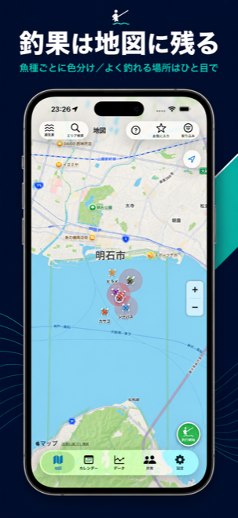
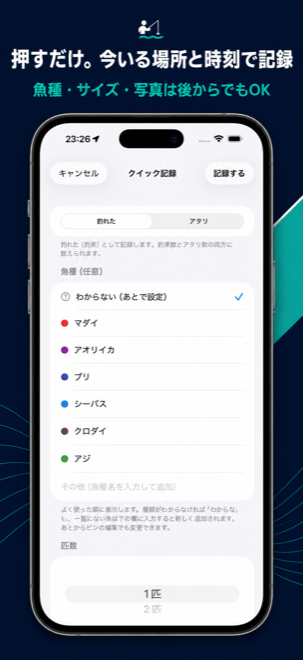
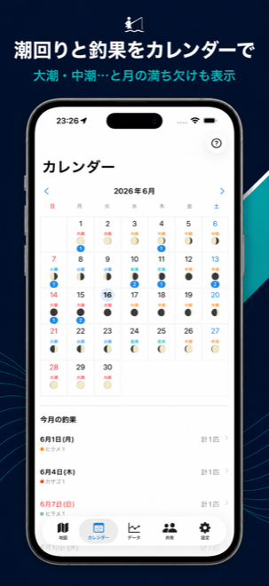
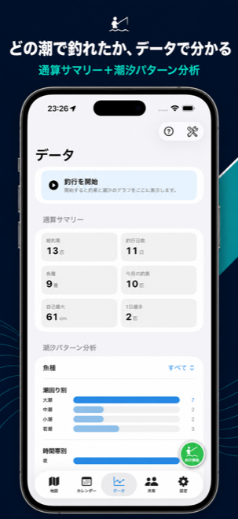
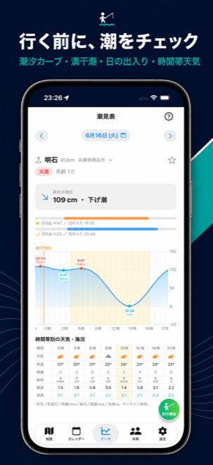

🍎 App Store で近日公開
記録するほど、釣れる理由が見えてくる
「いつ・どこで・どんな条件で釣れたか」を高い精度で残すアプリ。
📍
押すだけ記録
ボタンを押した瞬間の現在地・時刻で釣果ピンを作成。魚種・サイズ・写真は後からでも。
🌊
環境を自動付与
潮汐・潮回り・天気・波高・水深・月齢・日の出/入りを記録地点と時刻に合わせて自動でひも付け。
📈
潮汐パターン分析
どの潮回り・時間帯・潮の動きで釣れているかを可視化。釣りの再現性を高めます。
🗺️
地図とカレンダー
魚種で色分けしたピン、ヒート表示、潮名・月相つきカレンダーで釣果を一望。
🌙
潮見表・エリア検索
最寄り観測点の潮汐カーブ・満干潮・時間帯天気。行く前にポイントの潮をチェック。
👥
仲間とだけ共有
本当にシェアしたい身内グループにだけ共有。位置の見せ方も選べてポイントを守れます。
アプリの画面
← スワイプして主要機能を見る →

魚種で色分けした釣果ピンと、よく釣れる場所のヒート表示。

押すだけで現在地・時刻に記録。魚種・サイズは後からでも。

潮名・月の満ち欠け・釣果をカレンダーで一望。

通算サマリーと潮汐パターン分析で、釣れる条件を可視化。

潮汐カーブ・満干潮・日の出入り・時間帯天気を事前にチェック。
Catch Log とは
釣り人のための記録アプリです。押した瞬間の現在地・時刻で釣果を記録し、環境データを自動でひも付け。記録の精度が高いほど「どの条件で釣れるか」が見えてきます。蓄積したデータから釣れたパターンを把握し、次の釣行の再現性を高められます。
お問い合わせ
不具合のご報告・ご要望はお気軽に。アプリ内「設定 → 改善・サポート」からも送れます。